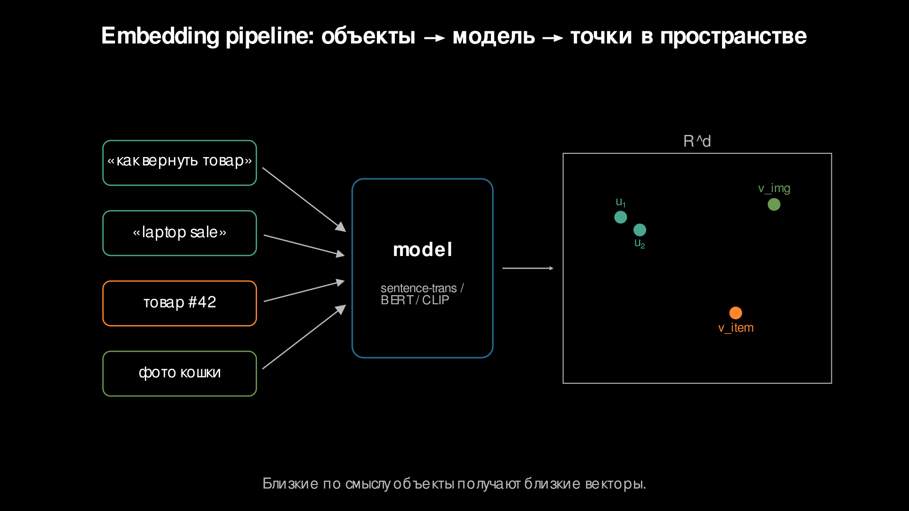
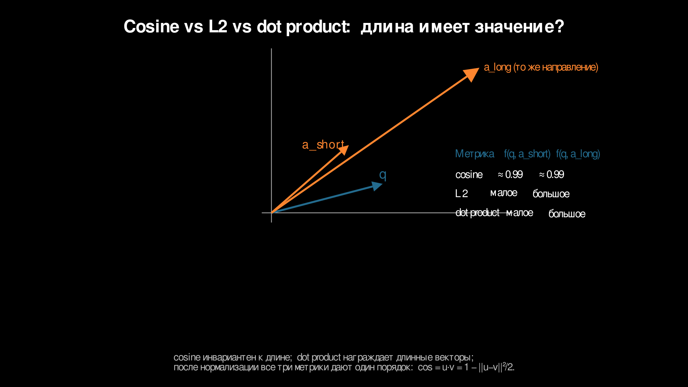
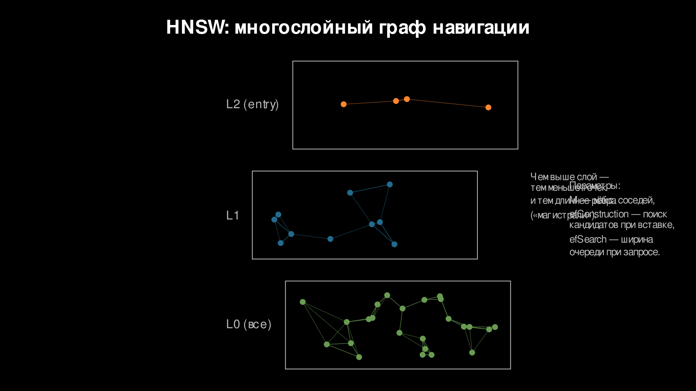
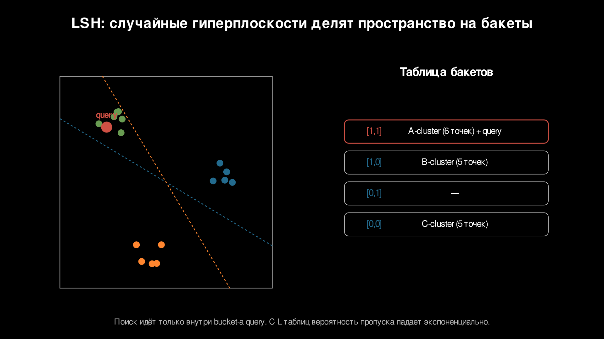
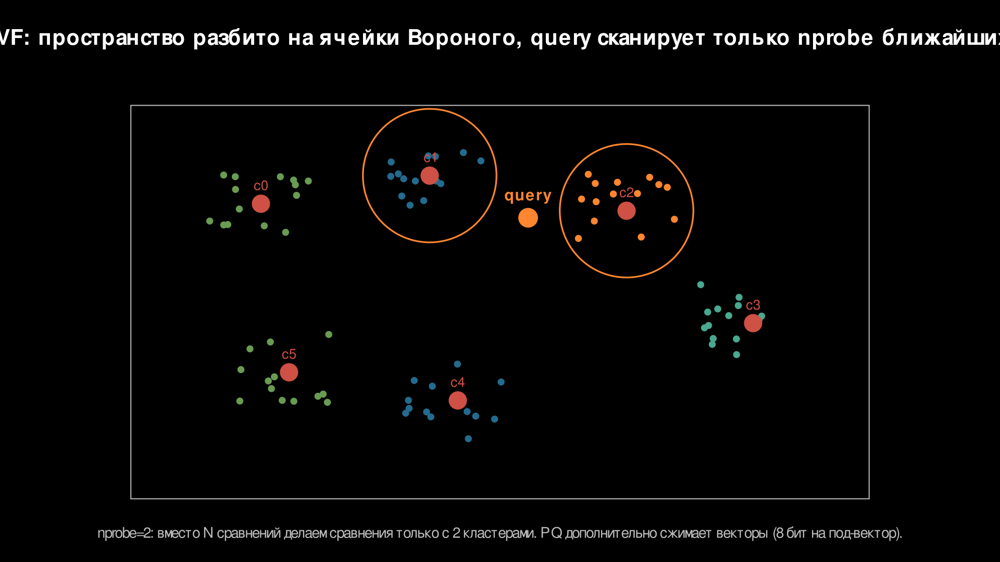
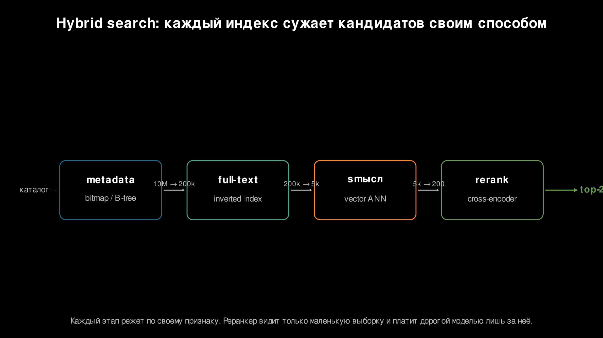

Эмбеддинги и векторный поиск
Эмбеддинги и векторный поиск
В прошлой лекции были индексы по явным ключам, токенам и координатам: инвертированный индекс, фильтр Блума, trie, bitmap, R-tree, QuadTree, KD-tree. Все они заранее готовят данные так, чтобы запрос не проверял всю коллекцию.
Теперь форма запроса меняется. Пользователь ищет товар, документ или изображение, похожие по смыслу. Для слов помогал инвертированный индекс. Для таких запросов нужен векторный индекс.
1. Почему инвертированный индекс не решает смысл
Инвертированный индекс строит отображение:
токен -> список документовЭто хорошо работает, когда запрос и документ используют одни и те же слова. Запрос смартфон найдёт карточку, где есть токен смартфон.
Но в каталоге маркетплейса этот же товар может называться по-разному:
"смартфон samsung"
"телефон galaxy"
"сотовый с большим экраном"По словам пересечения с запросом смартфон нет. По смыслу всё это про один класс товаров.
Инвертированный индекс видит токены, но не знает, что смартфон, телефон и сотовый могут обозначать один тип товара.
Можно добавлять словари синонимов, нормализацию словоформ, ручные правила. Это помогает, но плохо масштабируется: язык меняется, доменные термины появляются быстрее словарей, пользователи формулируют запросы непредсказуемо.
Есть и обратная задача: одинаковые слова с разным смыслом. Запрос apple может быть про смартфон, ноутбук, бренд или фрукт. Единица работы инвертированного индекса — токен, поэтому смысл он сам не различает.
Нужна структура для объектов, похожих по смыслу. Запросы, документы, товары или пользователи переводятся в числовое пространство так, чтобы близкие объекты лежали рядом. Тогда смартфон и телефон galaxy окажутся близко даже без полного совпадения слов.
Связь с прошлой лекцией:
- раньше индекс ускорял поиск по явным ключам и токенам;
- теперь индекс ускоряет поиск по близости в пространстве признаков;
- в обоих случаях индекс нужен, чтобы не сканировать всю коллекцию.
2. Что такое эмбеддинг
Эмбеддинг — векторное представление объекта фиксированной размерности.
Формально:
модель(объект) -> вектор ∈ R^dРазмерность d задаёт модель, и она не меняется от объекта к объекту. Типичные значения: 128, 256, 384, 768, 1024, 1536. Если модель выдаёт 768 чисел, каждый объект становится точкой в 768-мерном пространстве.
Объектом может быть:
- текст: sentence-transformers, BERT, encoder-модели;
- изображение: CLIP, ResNet, vision transformer;
- товар: описание, категория, цена, поведенческие признаки;
- пользователь: история просмотров, покупок, кликов, оценок;
- аудио: голос, музыка, шумовые и семантические признаки.
Главное свойство эмбеддинга:
похожие объекты -> близкие векторыСоздаёт это свойство модель, а не индекс.
Если модель училась сближать похожие тексты, то фразы как вернуть товар, оформление возврата покупки и правила возврата заказа получат близкие векторы.
Если модель училась на изображениях, две фотографии похожих товаров могут попасть в одну область пространства.
Если модель училась для рекомендаций, вектор пользователя может быть близок к векторам товаров, которые он с высокой вероятностью выберет.
Здесь две разные задачи:
- построить качественные эмбеддинги;
- быстро искать ближайшие эмбеддинги.
Первая относится к машинному обучению. Вторая относится к индексам, структурам данных и архитектуре хранения. Дальше говорим именно про быстрый поиск.

3. Метрики близости
Когда объекты стали векторами, нужно определить, что значит «близко».
| Метрика | Что измеряет | Когда использовать |
|---|---|---|
| косинусная близость | направление | семантическая близость |
| L2 | расстояние | числовые признаки, геометрия |
| скалярное произведение | направление + длина | рекомендации, сила сигнала |
Косинусная близость сравнивает направление векторов. Удобно для семантического поиска: короткий вопрос и длинная статья могут быть про одно и то же, хотя длина текста разная.
L2 измеряет геометрическое расстояние между точками. Удобно, когда координаты имеют числовой смысл и абсолютная разница важна. Товар с весом 2 кг ближе к товару 2,5 кг, чем к товару 20 кг.
Скалярное произведение учитывает направление и длину. Оно полезно, когда длина вектора несёт смысл.
На маркетплейсе это можно использовать так: направление вектора товара кодирует тип товара, бренд и аудиторию, а длина растёт у позиций, по которым модель видит сильный сигнал спроса: много покупок, добавлений в корзину и успешных переходов из поиска. Если два товара одинаково похожи по направлению, скалярное произведение поднимет выше товар с более сильным поведенческим сигналом. Косинусная близость этот сигнал отбросит, потому что сравнивает только направление.
Нормализация
Нормализация приводит вектор к длине 1:
v_norm = v / ||v||У нормализованных векторов косинусная близость, скалярное произведение и L2 дают одинаковый порядок ранжирования. Связь в одну строку:
\[\cos(u, v) = u \cdot v = 1 - \|u-v\|^2/2\]
Практический вывод: для нормализованных эмбеддингов можно искать максимум косинусной близости, максимум скалярного произведения или минимум L2 — порядок соседей будет тем же. Этим часто пользуются в текстовом поиске: векторы нормализуют заранее, а индекс настраивают под удобную метрику.
Если длина несёт смысл, нормализация его уничтожит. В примере выше популярная и редкая карточки маркетплейса с одинаковым направлением станут неотличимыми. Сигнал спроса пропадёт.
Поэтому выбор метрики — архитектурное решение. Нужно понимать, что модель кодирует в направлении, а что в длине.

4. Полный перебор векторов
Самый простой векторный поиск — сравнить вектор запроса со всеми векторами в коллекции. По сути это тот же полный перебор, только единицей проверки становится вектор.
Если в базе n объектов, а размерность эмбеддинга равна d, один запрос стоит примерно:
O(n * d)Для коллекции:
10 млн векторов × 768 измерений ≈ 7,7 млрд операцийИ это только подсчёт близости. Сверху ложатся чтение памяти, поддержание первых k результатов, фильтры, сетевые задержки и накладные расходы сервиса.
На маленькой коллекции полный перебор может быть нормальным решением. Он точный, простой и удобен как эталон для проверки качества ANN. На миллионах и миллиардах векторов обычно становится слишком дорогим.
Индекс нужен, чтобы заменить полный перебор быстрым отбором кандидатов. Для векторного поиска такой структурой чаще всего становится ANN-индекс.
5. ANN как компромисс
ANN — приближённый поиск ближайших соседей. Такой индекс возвращает достаточно хороших кандидатов быстрее, чем полный перебор, но не всегда находит строго точный топ.
В проде обычно смотрят на три метрики:
- полнота — какую долю настоящих ближайших соседей индекс нашёл. Если точная первая десятка содержит 10 объектов, а ANN вернул 8 из них, полнота@10 равна 0,8;
- задержка — время ответа на запрос, обычно с контролем p95 и p99;
- память — сколько занимает сам индекс поверх векторов.
Правило обмена:
- хотим больше полноты — индекс проверяет больше кандидатов, растёт задержка или память;
- хотим меньше задержки — индекс смотрит меньше кандидатов, теряем часть полноты;
- хотим меньше памяти — храним меньше связей или сжимаем векторы, платим качеством поиска.
ANN нужен ровно для этого компромисса: сколько точности можно отдать ради времени ответа и стоимости хранения. Правильный вопрос при выборе — какая полнота достаточна для продукта при заданной задержке и бюджете памяти.
Для поиска по документации можно жить с полнота@20 ниже 1,0, если сверху работает реранкер. Для поиска дубликатов документов полнота должна быть выше, потому что пропущенный дубль стоит дорого. Для рекомендаций допустимая полнота зависит от того, сколько кандидатов потом отфильтрует бизнес-логика.
6. HNSW
HNSW — один из самых популярных ANN-индексов для векторного поиска. Полное название: Hierarchical Navigable Small World graph.
HNSW строит многослойный граф близости. Вершины графа — векторы, рёбра соединяют близкие вершины. Верхние слои разреженные и содержат длинные навигационные рёбра. Нижние слои плотнее и отвечают за локальное уточнение.
Поиск начинается с точки входа на верхнем слое. Алгоритм жадно переходит к вершинам, которые ближе к запросу. Когда улучшений на текущем слое больше нет, поиск спускается ниже. На нижнем слое HNSW рассматривает больше локальных кандидатов и возвращает первые k соседей.
Эмпирически сложность поиска часто близка к O(log n). Это не строгая гарантия для любых данных, но на эмбеддинг-коллекциях HNSW обычно даёт хороший баланс задержки и полноты.
Схема слоёв:
layer 2: A ----------- H
\ /
layer 1: A --- C --- F --- H
\ \ / /
layer 0: A - B - C - D - E - F - G - HВерхние рёбра быстро приводят поиск в нужную область. Нижний слой уточняет ближайших соседей.

Параметры HNSW
В документации pgvector, Qdrant, Milvus и Elasticsearch быстро встретятся три настройки HNSW. Их не нужно запоминать как формулы. Достаточно понимать, какую ручку крутить, когда поиск стал дорогим или неточным.
M — сколько соседей хранится у одной вершины. Это плотность графа. Больше M — больше памяти, зато выше шанс найти хороший маршрут к похожим товарам.
efConstruction — насколько тщательно индекс ищет соседей при добавлении нового вектора. Чем больше значение, тем дольше строится индекс, зато связи получаются качественнее. Это разовая плата при загрузке каталога.
efSearch — ширина поиска во время запроса. Больше efSearch — медленнее, потому что проверяется больше вершин, зато точнее. Эту настройку часто меняют в проде: например, поднять полноту похожих товаров ценой нескольких миллисекунд.
Главное, что нужно запомнить про параметры:
Mкрутят при выборе бюджета памяти;efConstructionкрутят один раз при построении индекса;efSearchкрутят в проде, когда нужно подвинуть точку на оси «полнота против задержки», не перестраивая индекс.
HNSW хорошо подходит для миллионов и десятков миллионов векторов, когда важны низкая задержка и высокая полнота. Индекс может занимать заметно больше памяти, чем сами векторы. Для очень больших коллекций приходится добавлять сжатие, шардирование или другие ANN-подходы.
7. LSH
LSH — locality-sensitive hashing, хеширование с учётом близости. Идея простая: похожие векторы с высокой вероятностью попадают в одну корзину.
Для косинусной близости часто используют случайные гиперплоскости. Каждая гиперплоскость задаёт один бит подписи:
скалярное_произведение(вектор, случайная_плоскость) >= 0 -> 1
скалярное_произведение(вектор, случайная_плоскость) < 0 -> 0Несколько битов образуют хеш-подпись. Подпись указывает корзину. Если два вектора часто оказываются по одну сторону от случайных гиперплоскостей, их подписи будут похожими.
Поиск:
- считаем подпись запроса;
- находим соответствующие корзины;
- сканируем только векторы внутри них;
- пересчитываем точную метрику для найденных кандидатов.
Параметры:
L— число таблиц;k— число хешей на таблицу.
Больше L повышает шанс найти похожий объект, но память растёт, потому что объект записывается в несколько таблиц. Больше k делает корзины мельче. Поиск ускоряется, потому что кандидатов меньше, но полнота падает: похожие объекты легче разнести по разным корзинам.
LSH проще HNSW по устройству: его легче реализовать, объяснить и распределить по корзинам. На современных задачах с эмбеддингами он часто проигрывает HNSW по полноте при той же задержке. Хеш-подписи грубо режут пространство, а граф HNSW лучше использует локальную структуру данных. LSH остаётся полезным, когда нужна простая вероятностная схема или быстрый прототип.

8. IVF / PQ / квантизация
HNSW ускоряет поиск за счёт графа. Другой подход — сначала грубо разделить пространство, а потом просматривать только нужные области. Так работает IVF.
IVF — инвертированный файловый индекс (inverted file index). Название напоминает инвертированный индекс из текстового поиска. Только списки здесь устроены иначе: кластер указывает на векторы, которые к нему попали.
Сначала выполняется кластеризация, обычно k-means. Получаются центроиды, и каждый вектор назначается ближайшему центроиду. Во время запроса вектор запроса сравнивается с центроидами. Система выбирает nprobe ближайших кластеров и просматривает только их.
Маленький nprobe — запрос быстрый, но можно пропустить правильного соседа в соседнем кластере. Большой nprobe — полнота растёт, но задержка тоже растёт, потому что сканируется больше векторов.
IVF полезен, когда коллекция большая и графовый индекс становится дорогим по памяти. Но сам по себе IVF всё ещё хранит исходные векторы; для миллиардов векторов этого может быть слишком много.
Тогда применяют квантизацию — сжатие числового представления.
PQ (product quantization) разбивает вектор на m подвекторов. Каждая часть заменяется на ID ближайшего центроида, часто 8 бит на подвектор. Вектор из сотен float32-чисел превращается в короткий набор байтов, сжатие может быть в 10–100 раз.
Поиск работает по таблицам расстояний: для запроса заранее считаются расстояния до центроидов каждой подчасти, а расстояние до сжатого вектора приближённо складывается из таблиц. Плата — точность: запрос сравнивается с приближённым кодом вектора.
Поэтому IVF/PQ часто используют в два этапа: быстро получить широких кандидатов, затем пересчитать лучшие N точной метрикой или реранкером.

Реальные системы: FAISS, Milvus, pgvector, Qdrant, Elasticsearch Vector Search, Weaviate. Они отличаются API, режимами хранения, фильтрами, распределением и поддержкой HNSW/IVF/PQ, но архитектурная ось одна:
точность поиска <-> задержка <-> память <-> сложность эксплуатации9. Архитектурный выбор
Выбор индекса начинается с формы запроса, размера данных, требований к полноте и бюджета ресурсов.
| Сценарий | Представление | Индекс | Почему |
|---|---|---|---|
| поиск по документации | эмбеддинги текстов | HNSW | хорошая задержка и полнота |
| рекомендации | векторы пользователей и товаров | HNSW или индекс по скалярному произведению | близость + сила сигнала |
| поиск дубликатов | нормализованные эмбеддинги | HNSW по косинусной близости | ищем почти одинаковые |
| миллиард векторов | эмбеддинги + IVF/PQ | IVF/PQ | память и масштаб |
| маленькая коллекция | эмбеддинги | полный перебор | индекс может быть лишним |
Для поиска по каталогу важны переформулировки: пользователь пишет «ноутбук для монтажа», а в карточке может быть «мощная рабочая станция для видео». Эмбеддинги текста и HNSW дают хорошую стартовую связку.
Для рекомендаций важны смысл и сила сигнала. Если длина вектора кодирует спрос или уверенность модели, скалярное произведение может быть правильнее косинусной близости.
Для поиска дубликатов нужны почти одинаковые объекты. Нормализованные эмбеддинги и косинусная близость дают понятную геометрию, а efSearch обычно поднимают повыше, потому что пропустить дубль дорого.
Для миллиарда векторов первое ограничение — память: один float32-вектор размерности 768 занимает примерно 3 КБ, а миллиард таких векторов — около 3 ТБ только на сырые координаты. Поэтому появляются IVF, PQ, квантизация, шардирование и многоступенчатый поиск.
Для маленькой коллекции индекс может быть лишним: если объектов десять тысяч, полный перебор может быть быстрее в разработке, проще в эксплуатации и при этом достаточно быстрым в проде.
Практический порядок выбора:
- измерить полный перебор как эталон;
- определить целевые полноту@k и задержку;
- выбрать метрику и решить, нужна ли нормализация;
- подобрать индекс;
- настроить параметры на реальных запросах;
- проверять качество после фильтров и переранжирования, а не только на отдельном ANN-индексе.
Индекс имеет смысл, когда окупает память, построение, обновление, мониторинг качества и сложность интеграции.
10. Гибридный поиск
В реальных системах векторный поиск редко работает один. Поиск обычно комбинирует фильтры по метаданным, полнотекстовый поиск, векторный индекс и переранжирование.
Здесь две лекции модуля соединяются: в прошлой были индексы по явным ограничениям и токенам, теперь добавился индекс по близости смысла.
Пример SQL-подобного запроса:
category = 'ноутбуки' AND price < 100000
AND text matches 'игровой'
ORDER BY embedding <=> query_vector
LIMIT 100
-> rerankerСмысл этапов:
- bitmap/B-tree отсекает по метаданным;
- инвертированный индекс ищет слова;
- векторный индекс ищет смысл;
- реранкер (часто на cross-encoder, который оценивает пару
запрос, документсовместно) сортирует финальных кандидатов.
Фильтр по метаданным нужен, потому что цена, регион, права доступа и категория — это явные условия, и их лучше обрабатывать индексами по структурированным данным.
Полнотекстовый поиск нужен, потому что слова тоже важны: RTX 4070 может быть обязательным термином, названием видеокарты или частью SKU.
Векторный индекс нужен, потому что пользователь может описать смысл другими словами. Запрос ноутбук для современных игр должен находить карточки, где написано игровой ноутбук, даже если буквального пересечения по словам нет.
Реранкер получает пару запрос, документ и оценивает их вместе. Это дороже, чем поиск по эмбеддингам, поэтому реранкер применяют не ко всей базе, а к десяткам или сотням кандидатов.
Типичная схема:
1. фильтры по метаданным -> уменьшают область поиска
2. инвертированный индекс -> добавляет точные текстовые совпадения
3. векторный индекс -> добавляет смысловых кандидатов
4. слияние -> объединяет и убирает дубли
5. реранкер -> сортирует финальный список
Порядок стадий важен. Слишком жёсткий ранний фильтр может потерять хороших смысловых кандидатов, а ANN по всей базе потратит ресурсы на объекты, которые потом всё равно отсеются по цене, региону или правам доступа.
Если полагаться только на полнотекстовый поиск, переформулировки и перевод будут пропускаться. Если полагаться только на векторный поиск, теряются точные ограничения и важные ключевые слова.
Гибридный поиск работает потому, что разные индексы отвечают на разные формы запроса: B-tree и bitmap — на структурные условия, инвертированный индекс — на токены, векторный индекс — на близость смысла, реранкер — на точное финальное сравнение кандидата и запроса.
Общая схема:
форма запроса -> представление данных -> индекс -> кандидаты -> финальное ранжированиеВекторный поиск не заменяет остальные индексы. Он добавляет ещё один способ быстро получить кандидатов там, где явного ключа нет. Поэтому эмбеддинги и ANN стали важной частью современных поисковых, рекомендательных и RAG-систем.